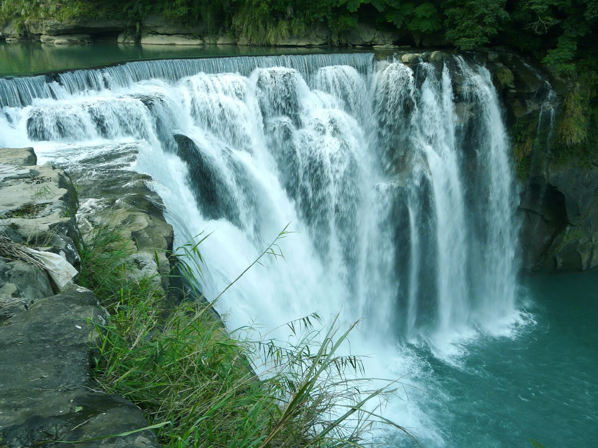

北部景點
台北 101
在觀景台，導覽員會介紹台北市的地標和歷史，以及建築本身的特色。提供觀景台入口處和不同角度的資訊。
夜晚的燈光秀往往有不同主題，導覽員可以解說燈光秀的背後故事，讓遊客更深入了解每次燈光秀的意義。

中部景點

南部景點
東部景點
太魯閣國家公園（花蓮）
峽谷與瀑布導覽： 導覽員會帶領遊客探索太魯閣的峽谷和瀑布，解說當地的生態和地質特色。
溯溪探險： 導覽員可以指導遊客進行太魯閣的溯溪活動，體驗大自然的美妙